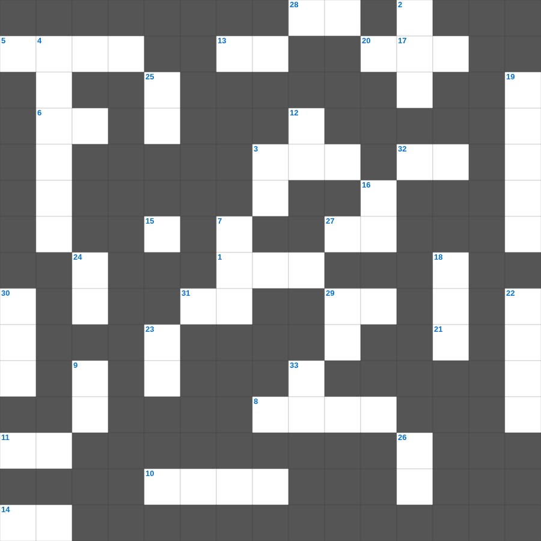

다니엘: 뜻을 정한 소년
📌 서비스 정의
십자가로세로는 교회 주보와 주일학교에서 사용할 수 있는 성경 기반 가로세로 퍼즐 서비스입니다. 성경 인물, 사건, 핵심 구절을 바탕으로 제작되었습니다. 온라인 풀이 및 인쇄 기능을 제공합니다.
오늘은 다니엘의 주요 내용을 담은 다니엘 성경 퀴즈 문제를 준비했습니다. 총 35개의 힌트가 있으며, 주일학교 교재나 성경공부 자료로 활용하기 좋습니다. 무료로 즐기는 다니엘 가로세로 퍼즐을 지금 바로 풀어보세요!

📝 가로 힌트
1. 하나님이 시내산에서 모세에게 주신 법
3. 예수님이 세례받으실 때 성령이 이 모양으로 내려옴
5. 에덴 동산에서 흘러나온 네 강 중 하나
6. 의의 이것 신경(호심경)
8. 노동자 하루 품삯에 해당하는 은화
10. 이스라엘의 수도이자 거룩한 성
11. 시편 다음 책
13. 노아 시대에 온 세상을 뒤덮은 물 심판
14. 동방박사들이 별을 보고 찾아와 경배한 날
15. 너는 나 외에는 다른 이것들을 두지 말라
17. 잃어버린 한 마리 이것을 찾는 목자
20. 하나님께 노래로 영광 돌리는 팀
21. 공의를 마르지 않는 이것 같이 흐르게 하라
27. 어려운 이웃을 돕는 일
28. 복음을 전하러 외국으로 나가는 일
29. 곡식으로 드리는 제사
31. 예수 그리스도는 어제나 오늘이나 영원토록 이것하시니라
32. 예수님이 구름을 타고 하늘로 올라가심
📝 세로 힌트
2. 예수님의 머리카락이 이것 같다고 묘사됨(계시록)
3. 호흡이 있는 자마다 찬양하라 이것으로
4. 여호사밧 왕 때 찬양대가 앞장서자 적들이 무너진 곳
7. 예수님이 광야에서 금식하신 일수
9. 등불을 들고 신랑을 기다리는 열 명의 이것
12. 야곱의 아들 수
16. 충성, 온유, 이것
18. 나아만 장군이 문둥병을 고친 강
19. 부활 후 도마에게 보여주신 부위
22. 하나님이 우리와 함께 계시다
23. 오직 의인은 이것으로 말미암아 살리라
24. 하나님의 이름을 이것되이 일컫지 말라
25. 바다의 물고기와 이것들
26. 반석 위에 지은 집과 이것 위에 지은 집
29. 곡물로 드리는 제사
30. 모세가 십계명을 받은 산
33. 광야에서 하늘에서 내려온 양식
🧑🏫 교회 교육 자료 활용
이 퍼즐은 주일학교 교재 추천 자료로 활용할 수 있고, 주일학교 주보에 넣기 좋은 분량으로 구성되어 있습니다. 수업용 주일학교 교안에 활동지로 붙이거나, 예배 후 복습용 주일학교 공과교재로 바로 사용할 수 있습니다.
🏷️ 키워드
다니엘 성경 퀴즈 문제, 다니엘, 십자가로세로, 성경퀴즈, 말씀퀴즈, 가로세로퍼즐, 주일학교 교재 추천, 주일학교 주보, 주일학교 교안, 주일학교 공과교재